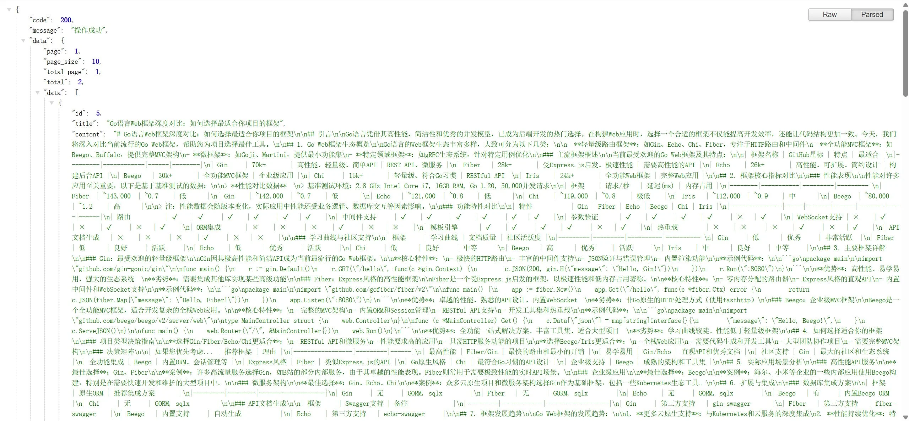

博客API服务
项目概述
这是一个基于Go语言和Gin框架开发的高性能博客API服务。采用三层架构设计（路由层、服务层、数据层），实现了完整的博客系统后端功能。项目使用MySQL作为主数据库，Redis作为缓存层，通过JWT实现用户认证，确保API的安全性和可靠性。
项目亮点
- 采用Go语言开发，性能优异
- 使用Gin框架，开发效率高
- 完善的缓存策略，提升响应速度
- 规范的API文档和错误处理
- 支持容器化部署
核心功能
- 用户认证：JWT token认证，支持刷新token
- 文章管理：CRUD操作，支持草稿和发布状态
- 分类管理：多级分类支持，灵活的分类结构
- 评论系统：多级评论，评论审核功能
- 数据统计：访问量、用户增长等统计功能
- 文件上传：支持图片等文件的上传和管理
技术栈
- 核心框架：Go + Gin
- 数据库：MySQL + GORM
- 缓存：Redis
- 认证：JWT
- 文档：Swagger
- 部署：Docker + Docker Compose
API 示例
// 获取文章列表
GET /api/posts
参数：
- page: 页码
- size: 每页数量
- category: 分类ID
- tag: 标签
- status: 状态
// 获取文章详情
GET /api/posts/:id
// 创建新文章
POST /api/posts
{
"title": "文章标题",
"content": "文章内容",
"category_id": 1,
"tags": ["Go", "API"],
"status": "published"
}
// 用户认证
POST /api/auth/login
{
"username": "admin",
"password": "password"
}项目展示

API文档展示
×